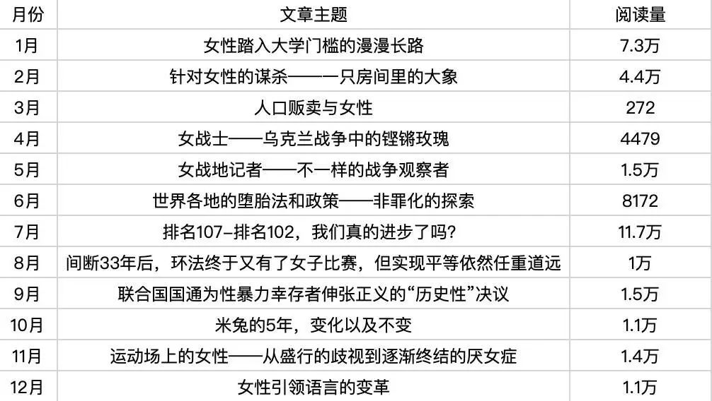

大队年报|改变随时可能发生

2022年，经历重重挑战，我们在最后时刻迎来了希望。疫情三年，工作机会减少，给女性的机会可能更少。年内，我们曝光了240起招聘性别歧视事件，收到了17个回复，其中仅7个回复承认存在性别歧视，并承诺改正。
放眼全球，美国最高法院裁决将堕胎的合法性问题留给各联邦州应对，伊朗阿米尼未按规定严格佩戴头巾被“道德警察”逮捕后死亡，塔利班禁止阿富汗女性接受大学教育……这些事情让外国的月亮也不再那么圆了。
身为女性的代价，或许是要面对各自不同的难题。我们起诉了微博，要求拿回被炸账号，但未获法院立案。此后，大队开始对自身微博，微信发布的内容进行自我审查，但还是有一些信息受到了上述平台的限制。
国家公务员招考性别限制研究报告已经进行到了第7年，相关情况没有明显改善，经常被投稿的军队文职招考性别限制似乎更多。
大队为志愿者准备了书签和口罩等周边作为福利，感谢ta们的付出。去年一年的工作成果也搬运到了网站上……
新的一年，希望我们能继续有所期待。（文末有彩蛋）
二是2月份长沙市开福区教师编制招同一岗位分男女招聘造成的巨大男女竞争数量悬殊的招聘不公，官方执迷不悟的态度：尊重教育规律才男女分岗招聘，不存在歧视；

2022年，“就业性别歧视煎茶队”终于做到了“全勤”（指没有被炸号），大队全年共遇见了1.1w位关注就业性别歧视的姐妹。同时，在姐妹们积极投稿和志愿者姐妹们不计辛劳的对投稿的处理下，大队收到并发出招聘中存在性别歧视投稿共240起。
我们深知，大队曝光的就业歧视只是冰山一角，大队能做的也并不很多，但我们始终相信：有一份力就发一份光，总能为平权助力。
一、今年海外之声发布世界各国女性相关资讯193篇，总阅读量超过358万，平均每篇阅读量超过1.8万。阅读量最高的三篇资讯为：
【东南亚】科技行业中的女性：风投如何帮助缩小东南亚的性别差距 42.5万
【欧盟】欧盟推动制定2026年董事会女性的配额的新规则 12万
【韩国】韩国的性别平等实验面临挑战韩国总统尹锡悦决定废止内阁中的性别配额制 11.1万
但我们也注意到，几十万阅读的微博全部出自7月末之前，自7月末始，微博限流严重，阅读量受到影响，阅读量最高的新闻降至几万。对于所谓敏感词和敏感内容，需要探索更好的应对方法。
二、今年翻译社发布专题长文12篇，实现了月更一篇的小目标。翻译社与设计组合作完成了两个较大的翻译项目：翻译制作了《展现方式指南——体育运动中的性别平等、公平及包容性表述》（早于官方中文版）；翻译制作了世界经济论坛《2022年全球性别差距报告》中涉及中国的部分。
本年度阅读量最高的一篇专题文为《女性踏入大学门槛的漫漫长路》，阅读量7.3万。部分敏感话题依然限流严重。
